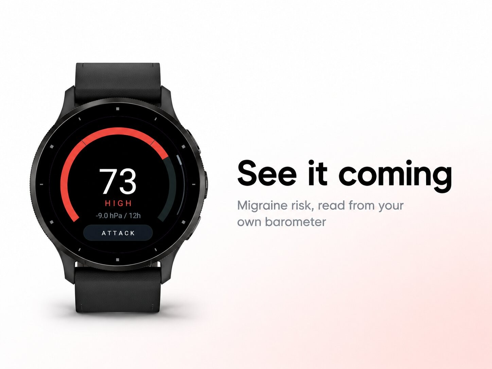
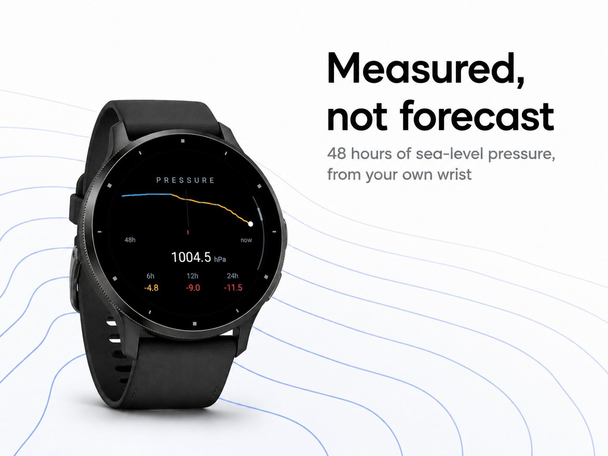
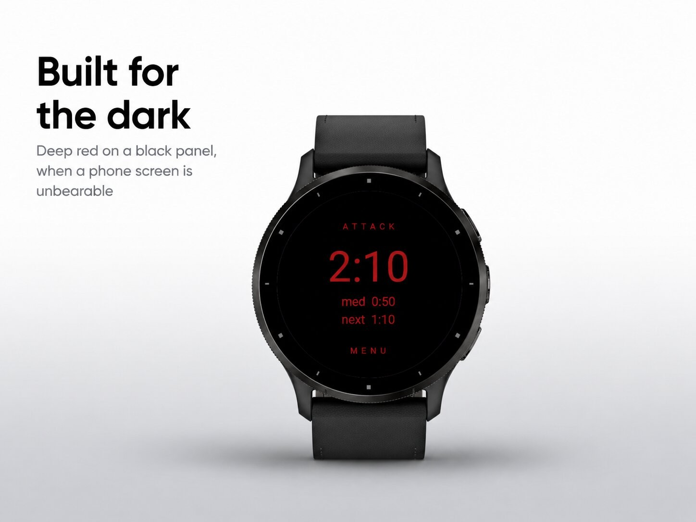
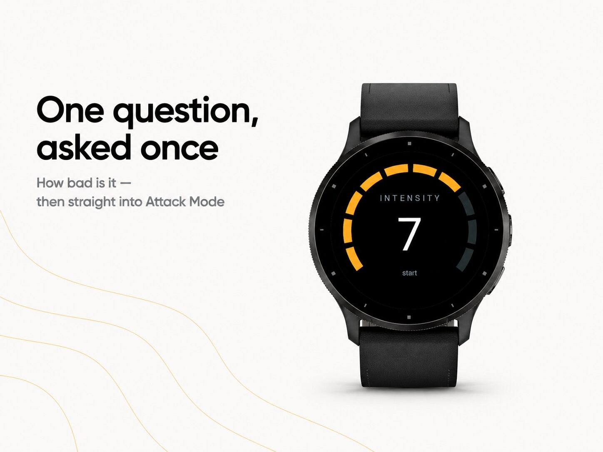

Health & habits · Device app
Migraine risk from the barometer, plus an attack log.




Isobar reads the barometer in your watch and turns it into a migraine risk score you can check for yourself.
Falling barometric pressure is among the most frequently reported migraine triggers in the published literature. Isobar keeps its own 48-hour record of sea-level pressure, weighs how fast it is changing against your Body Battery and stress, and puts one number on your wrist — together with the figures behind it, so you can hold it up against the sky instead of trusting a score you cannot see into.
Everything you log stays your own record. Isobar counts it and draws it — how many attack days this month, how intense your attacks usually are, how long they last, what time of day they tend to start — and leaves the reading of it to you and your doctor.
A watch with a barometric altimeter. Body Battery and stress are used when your watch reports them, and quietly skipped when it does not. Nothing leaves the watch: no account, no server, no phone required.
This app is not intended to be used for the purposes of medical treatment and is intended for educational purposes only. Isobar is not a medical device. It does not diagnose, treat, cure or prevent any disease or condition, it does not identify the cause of your migraines, and it does not replace advice from your doctor.